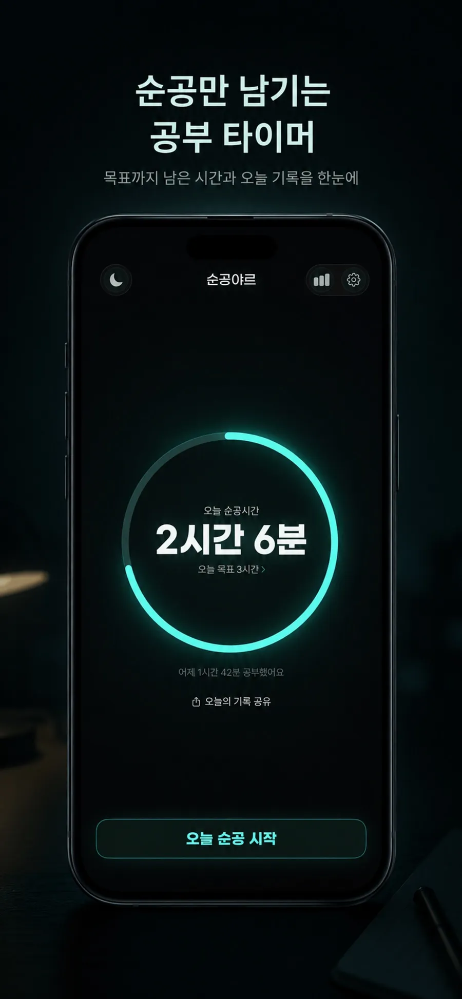
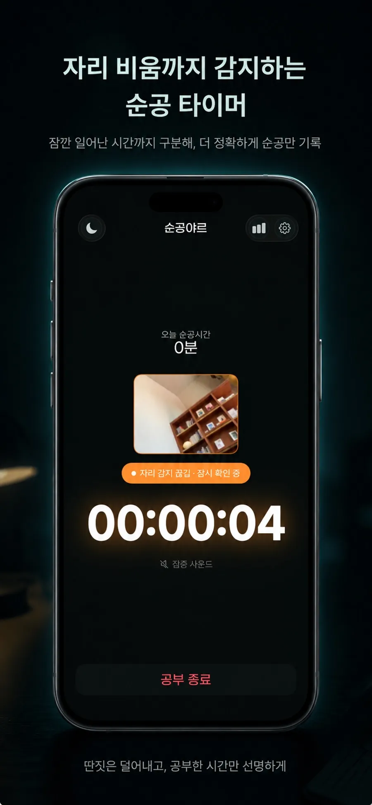

자리에 앉아 집중하는 동안엔 시간이 또박또박 흘러가요.
카메라가 자리 비움을 감지해요
딴짓은 빼고,
딴짓은 빼고,
순공만 남겨요
자리를 비우면 타이머가 알아서 멈춥니다. 잠깐 폰을 보든 화장실을 가든, 진짜 책상 앞에 앉아 집중한 시간만 또렷하게 기록돼요.
- 자동 멈춤자리 비우면
- 순공만진짜 집중 시간
- 주·월 통계위젯 · iCloud
공부 중
📷 자리 감지 ON
오늘 순공시간
02:06:00
오늘 목표 3시간
딴짓은 덜어내고, 순공만 선명하게


앉으면 흐르고, 일어나면 멈춰요
전면 카메라가 자리 비움을 알아서 구분합니다. 영상은 기기 안에서만 처리돼요.
일어서면 “자리 감지 끊김”으로 바뀌고 타이머가 멈춰요.
다시 앉으면 끊긴 지점부터 자연스럽게 이어집니다.
시작 버튼 하나로, 나머지는 자동
-
01
순공 시작
오늘 목표를 정하고 ‘순공 시작’만 누르면 끝이에요.
-
02
자리 자동 감지
카메라가 자리 비움을 감지해 알아서 멈추고 이어가요.
-
03
순공만 기록
딴짓은 빠진 진짜 집중 시간이 통계로 차곡차곡 쌓여요.
정확한 측정에 집중한 기능들
-
카메라 자리 감지
자리를 비우면 자동으로 멈춰 순공 시간만 정확히 측정해요.
-
실시간 상태 표시
공부 중·자리 비움·복귀를 한눈에 보이게 표시해요.
-
주간·월간 통계
쌓인 순공을 통계와 공유 카드로 깔끔하게 돌아봐요.
-
위젯 · 라이브 액티비티
홈 위젯과 잠금화면 라이브 액티비티, iCloud 동기화까지.
오늘부터,
순공만 남겨볼까요?
흘려보낸 시간 말고 진짜 집중한 시간을 기록하면, 공부의 밀도가 보입니다. 순공야르와 함께 오늘 순공을 시작해보세요.